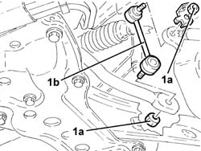
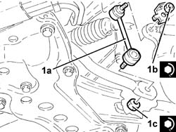

4410C12 front suspension anti roll barjoint(end)(one), lh or rh - r r
- Path
- Procedures > 44 SUSPENSION AND WHEELS > 4410 FRONT SUSPENSION > 4410C stabilizer bar and anchorage struts > 4410C12 front suspension anti roll barjoint(end)(one), lh or rh - r r
- Kind
- repair procedure (removal / refitting; the operation number is the code)
- Applies to
- all engines; all production periods
- Interactive page
- https://sloeber94.github.io/elrnDB-a147/en/#/3025328
Applies to: all engines; all production periods
 Removing
Removing
 Refitting
RefittingPosition the vehicle on the ramp.
1. Undo the nuts (1a) and remove the rear suspension anti-roll bar joint (1b).

Applies to: all engines; all production periods
Refitting
Removing1. Place the front suspension anti-roll bar joints (1a) back in their housings and fix it tightening nuts (1b) and (1c) to the recommended torque.
 | Fastening | Component | Ø | Value (daNm) |
|---|---|---|---|---|
1b | Nut | FRONT ANTI-ROLL BAR JOINTS | M10 | (Front shock absorber fork side) 4.1 ÷ 5.0 |
| Fastening | Component | Ø | Value (daNm) |
|---|---|---|---|---|
1c | Nut | FRONT ANTI-ROLL BAR JOINTS | M10 | (Anti-roll bar side) 4.5 ÷ 5.5 |

Applies to: all engines; all production periods
Remove the car from the ramp.